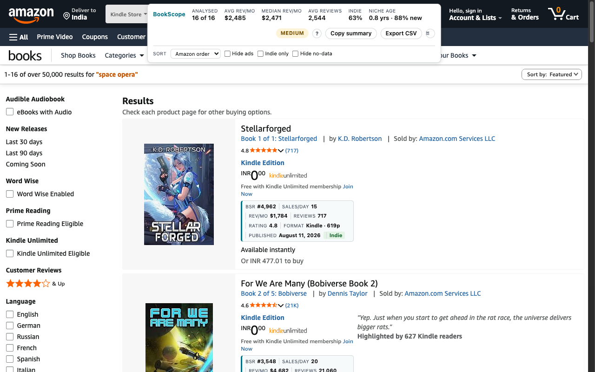

What the top Amazon Kindle Store results for space opera are estimated to earn, measured with BookScope on September 2026.
Medium 16 results on the first page, 16 with a Best Sellers Rank

| # | Best Sellers Rank | Format | Pages |
|---|---|---|---|
| 1 | #4,962 | Kindle | 619 |
| 2 | #3,548 | Kindle | 321 |
| 3 | #490 | Kindle | 470 |
| 4 | #1,960 | Kindle | 256 |
| 5 | #1,086 | Kindle | 301 |
| 6 | #6,326 | Kindle | 484 |
| 7 | #2,867 | Kindle | 373 |
| 8 | #2,797 | Kindle | 277 |
| 9 | #1,803 | Kindle | 312 |
| 10 | #6,519 | Kindle | 331 |
| 11 | #1,397 | Kindle | 283 |
| 12 | #12,135 | Kindle | 394 |
BookScope is a Chrome extension that puts this under every book on Amazon search and Best Sellers pages — six stores, Kindle and print, KDP's real royalty terms. The first 5 results on every page are free.
Add BookScope to Chrome — free
Search checked: https://www.amazon.com/s?k=space+opera&i=digital-text · 2026-09-10